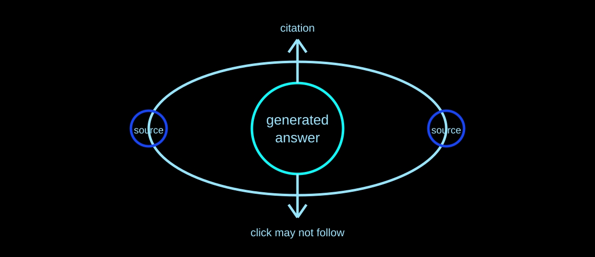

Search research
Generative Engine Optimization and the Rise of Zero-Click Search
Generative engine optimization, often shortened to GEO, describes work intended to improve how a site is understood or cited in AI-generated answers. It does not replace ordinary search fundamentals, and it does not create a guarantee that a model will recommend a page.
Published

Quick definition
Generative engine optimization is a developing label for improving a publisher’s visibility in answer-oriented AI search experiences. “Zero-click” describes a related behaviour: a person may receive a useful response on the results page or in a chat interface without visiting the cited source.
What changes for publishers
The unit of attention may be a quoted fact, a cited page, or a brand mention rather than a click. That makes accurate source material, clear explanations, descriptive titles, and visible authorship more important—not less. It also makes inflated claims tempting. Resist them.
Measure the questions your audience actually asks. Save the prompt, model, time, market, answer, links, and whether the site was named or cited. Compare snapshots over time, then inspect the pages behind any movement. A single generated answer cannot prove a strategy worked.
Research note
The cited article below frames GEO and zero-click culture as a discussion topic in higher-education and marketing contexts. It should be read as context, not as proof that any particular markup, file, or content formula raises citation probability.
Limits
Answer systems evolve quickly and differ by product. Citation choice can depend on retrieval, freshness, authority, region, prompt phrasing, and safety rules. Avoid selling “AI citation guarantees.”